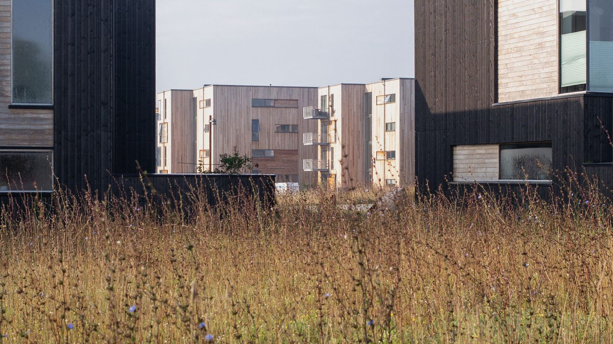
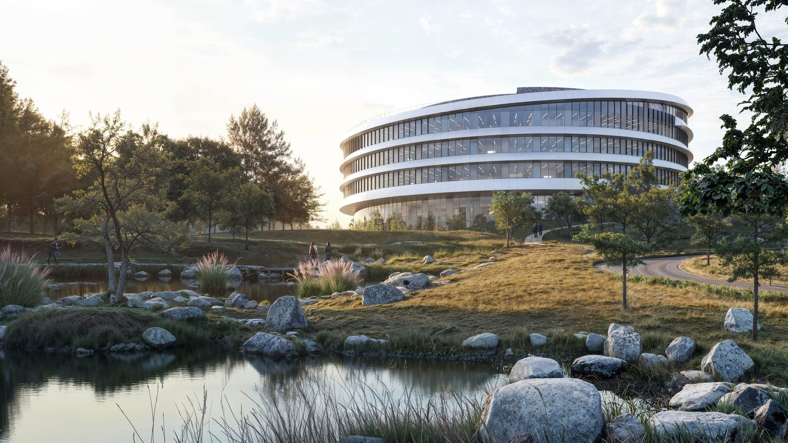
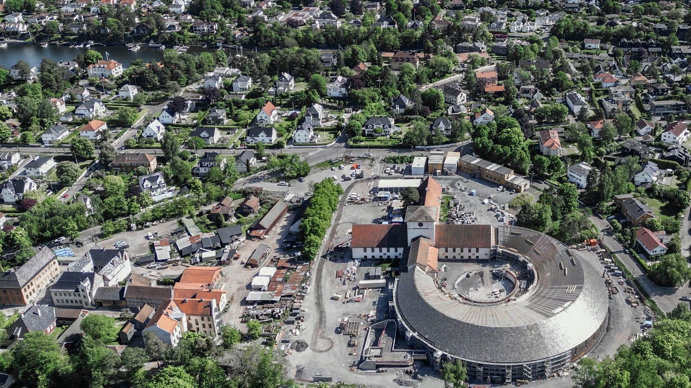
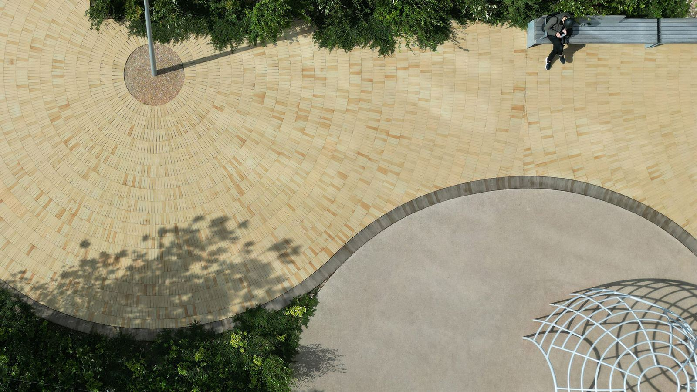
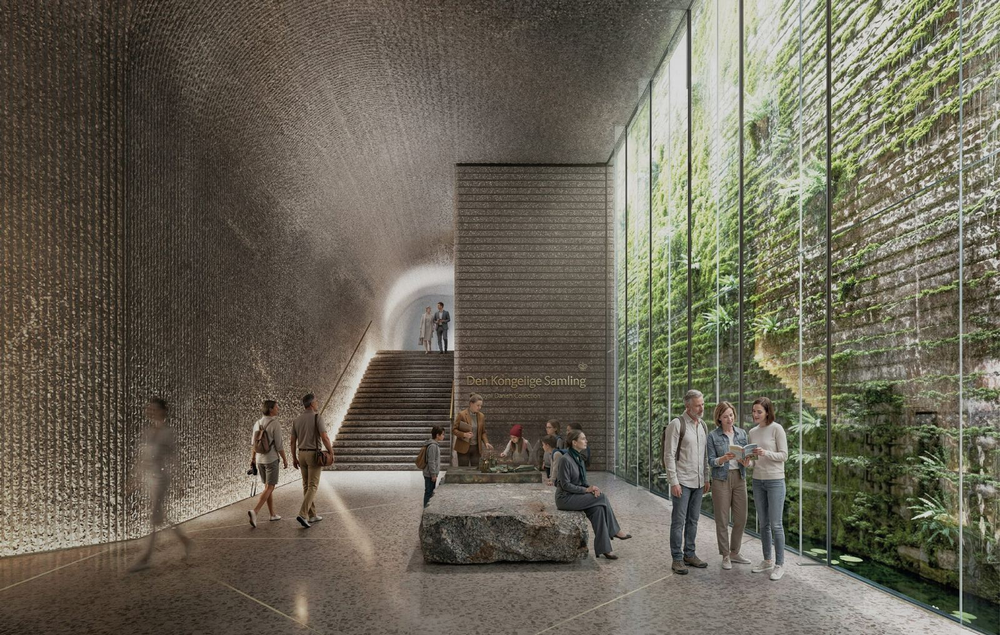
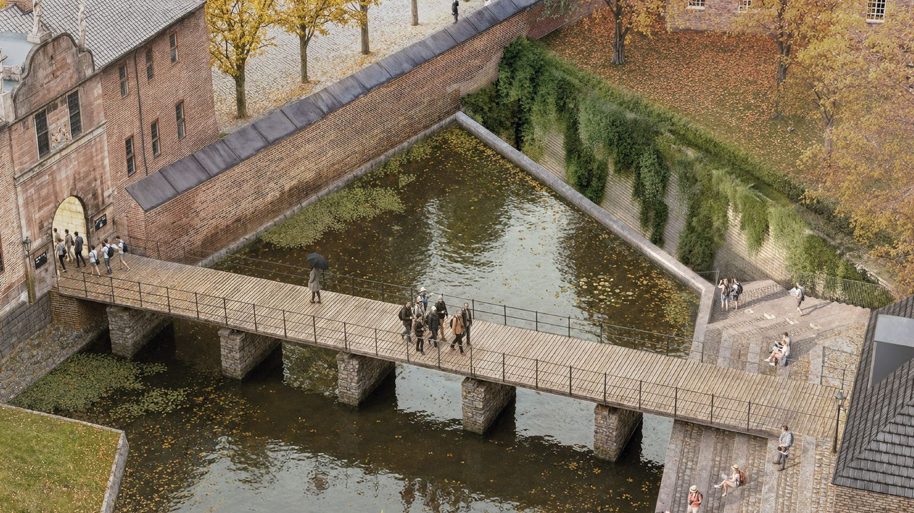
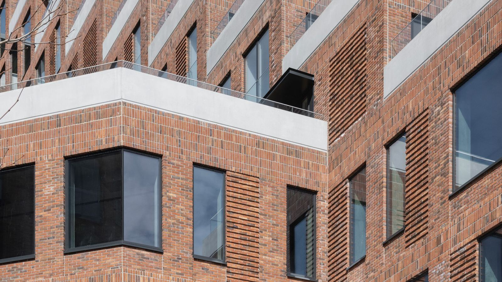
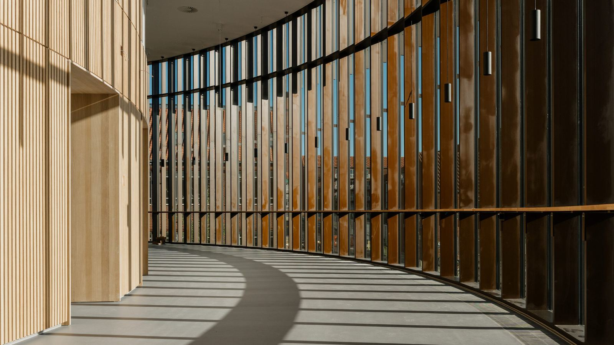

01Arkitektur
Bygg utformet etter stedet og bruken.

arkitektur · Aarhus
I AART tar vi ansvar gjennom det bygde miljøet, med en ambisjon om arkitektur som har merkbar effekt for mennesker, miljø og samfunn.
Tjenester

01Bygg utformet etter stedet og bruken.

02Hva bygget skal romme, og for hvem.

03Valg som kan dokumenteres, ikke bare loves.
Kunder sier
«Architektur war schon immer ein Spiegel unserer Umwelt – für uns bei AART ist sie auch ein Mittel, diese weiterzuentwickeln.»
«Det byggede miljø rummer et kæmpe potentiale til at forebygge og forløse mange af de udfordringer, som mennesker, organisationer og samfund står overfor i dag. Med en helhedsorienteret, tværfaglig tilgang til arkitekturen hjælper vi kunder og organisationer med at se og realisere det potentiale.»
Slik kunne det se ut
Arkitektur begrunnes ofte i kvaliteter som er vanskelige å måle. En side der byggherren ser hvilke mål som er satt for lys, arealbruk og materialer, og hvordan forslaget scorer, gjør det faglige skjønnet synlig i beslutningen.
Se hvilken effekt bygget faktisk får
Slik jobber vi
Hva tomta og omgivelsene gir rom for.
Skisser og valg, med konsekvenser.
Vi følger opp til det står ferdig.
Inntrykk







Beskriv saken, så svarer vi med hva det krever og hva det koster.
Send en henvendelse